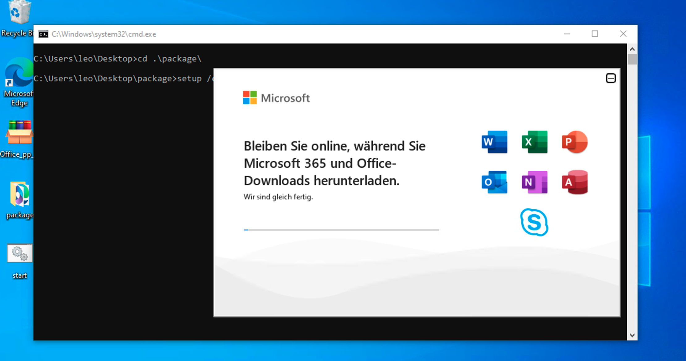
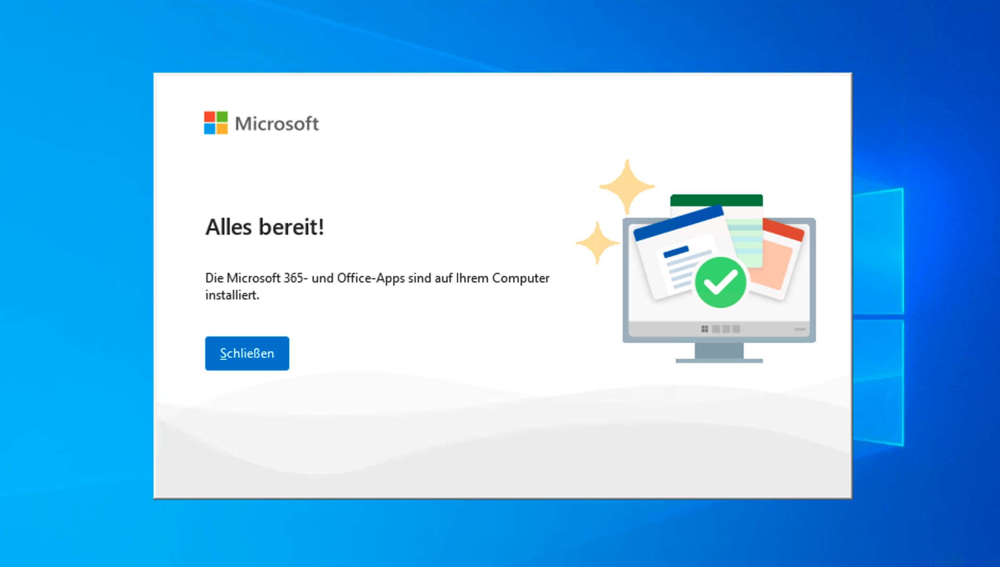

Video demonstration of the installation and activation process
1. Download and run the Office Deployment Tool
- Office Deployment Tool download Office_pp_2024_DE_64Bit_Windows.exe
-
Double-click the Office_pp_2024_DE_64Bit_Windows.exe file to extract
it. By default, it will be extracted to the folder where the file is
currently located.

-
The Microsoft Office Deployment Tool will prompt a dialog asking to
download Office. Select Yes.

- The Deployment Tool will download and install Office from the Microsoft servers. This process will take some time, and the duration depends on your internet speed. 
- After the installation is complete, the program will display the following prompt. Close the prompt. At this point, you may delete the tool Office_pp_2024_DE_64Bit_Windows.exe as well as the extracted package folder and the start file. 